Introduction to covidBR dataset
Source:vignettes/intro_covidBR_dataset.Rmd
intro_covidBR_dataset.RmdThe covid R package includes a dataset containing
COVID-19 epidemiological data from Brazil. In this
introductory vignette, we will highlight some of the characteristics of
this dataset that make it useful for reporting COVID-19 statistics in
Brazil.
The covidBR package
The original data comes from the Brazilian COVID-19 Portal
(Portal do COVID-19), and can be found at https://covid.saude.gov.br. Daily, the Ministry of
Health (Ministério da Saúde) updates and publicly
disseminates the database. In this context, the covidBR R
package was built to extract data from the Brazilian COVID-19
Portal.
This package contains a dataset called covidBR.
Furthermore, it provides raw data, downloaded from the COVID-19 Portal,
in CSV format files (access here).
Installation
You can install the development version of covidBR from
GitHub with:
# Development version
# install.packages("devtools")
devtools::install_github("arianacabral/covidBR")Meet the covidBR dataset
The covidBR dataset contains 17 variables for each
Brazilian region, municipality, and state.
You can read more about the variables by typing
?covidBR::covidBR.
You can view what variables are available using the
str() function.
# Display the dataset's structure
str(covidBR)
#> Classes 'data.table' and 'data.frame': 511329 obs. of 17 variables:
#> $ regiao : chr "Brasil" "Brasil" "Brasil" "Brasil" ...
#> $ estado : chr "" "" "" "" ...
#> $ municipio : chr "" "" "" "" ...
#> $ coduf : int 76 76 76 76 76 76 76 76 76 76 ...
#> $ codmun : int NA NA NA NA NA NA NA NA NA NA ...
#> $ cod_regiao_saude : int NA NA NA NA NA NA NA NA NA NA ...
#> $ nome_regiao_saude : chr "" "" "" "" ...
#> $ data : IDate, format: "2022-08-06" "2022-08-07" ...
#> $ semana_epi : int 31 32 32 32 32 32 32 32 33 33 ...
#> $ populacao_tcu2019 : int 210147125 210147125 210147125 210147125 210147125 210147125 210147125 210147125 210147125 210147125 ...
#> $ casos_acumulado : num 34011173 34018371 34035780 34066000 34096935 ...
#> $ casos_novos : int 16703 7198 17409 30220 30935 27644 23552 17726 4429 7954 ...
#> $ obitos_acumulado : int 679939 679996 680166 680531 680786 681006 681253 681400 681437 681557 ...
#> $ obitos_novos : int 181 57 170 365 255 220 247 147 37 120 ...
#> $ recuperadosnovos : int 32691603 32731706 32790294 32854341 32901273 32927762 32945953 32966689 32993386 33033317 ...
#> $ em_acompanhamento_novos: int 639631 606669 565320 531128 514876 515811 520925 517768 495463 463366 ...
#> $ interior_metropolitana : int NA NA NA NA NA NA NA NA NA NA ...
#> - attr(*, ".internal.selfref")=<externalptr>You can also view the data in a tabular form.
covidBR %>%
dplyr::filter(data >= max(data),
municipio == "") %>%
dplyr::select(-c(municipio,
coduf,
codmun,
cod_regiao_saude,
nome_regiao_saude,
semana_epi,
populacao_tcu2019,
interior_metropolitana,
em_acompanhamento_novos,
recuperadosnovos)) %>%
dplyr::arrange(regiao, estado) %>%
head(n = 15L) %>%
knitr::kable()| regiao | estado | data | casos_acumulado | casos_novos | obitos_acumulado | obitos_novos |
|---|---|---|---|---|---|---|
| Brasil | 2022-11-04 | 34849063 | 2755 | 688332 | 65 | |
| Centro-Oeste | DF | 2022-11-04 | 843162 | 42 | 11832 | 0 |
| Centro-Oeste | GO | 2022-11-04 | 1727729 | 258 | 27581 | 1 |
| Centro-Oeste | GO | 2022-11-04 | 0 | 0 | 0 | 0 |
| Centro-Oeste | MS | 2022-11-04 | 582378 | 15 | 10845 | 0 |
| Centro-Oeste | MT | 2022-11-04 | 832626 | 114 | 14957 | 0 |
| Centro-Oeste | MT | 2022-11-04 | 0 | 0 | 0 | 0 |
| Nordeste | AL | 2022-11-04 | 321582 | 6 | 7128 | 0 |
| Nordeste | AL | 2022-11-04 | 0 | 0 | 0 | 0 |
| Nordeste | BA | 2022-11-04 | 1704438 | 107 | 30795 | 2 |
| Nordeste | BA | 2022-11-04 | 20872 | 5 | 356 | 0 |
| Nordeste | CE | 2022-11-04 | 1386713 | 67 | 28007 | 0 |
| Nordeste | CE | 2022-11-04 | 18155 | 0 | 0 | 0 |
| Nordeste | MA | 2022-11-04 | 474755 | 33 | 10997 | 0 |
| Nordeste | MA | 2022-11-04 | 0 | 0 | 0 | 0 |
Note that the raw data contains duplicate information!
Tidy data for more efficient data science
When data is duplicated, it is necessary to organize data to help us work in an efficient, reproducible, and collaborative way.
The example below shows one way to organize the data and remove duplicate elements, but you can represent this same data in several ways.
# Get covidBR dataset
tidycovidBR <- covidBR
# Retain all rows with the most recent notification date for each Brazilian state.
tidycovidBR <- tidycovidBR %>%
dplyr::filter(data >= max(data),
municipio == "") %>%
dplyr::arrange(regiao, estado)
# Pivot the offending columns into a new pair of variables
tidycovidBR <- tidycovidBR %>%
tidyr::pivot_longer(
cols = c(populacao_tcu2019:interior_metropolitana,
codmun),
names_to = "variavel",
values_to = "valor")
# Select the interesting columns
tidycovidBR <- tidycovidBR %>%
dplyr::select(-c(cod_regiao_saude, nome_regiao_saude))
# Aggregate the duplicate columns
tidycovidBR <- tidycovidBR %>%
dplyr::group_by(variavel,
data,
regiao,
estado,
municipio,
semana_epi,
coduf) %>%
dplyr::summarise_at(vars(valor),
list(valor = max),
na.rm = TRUE)
# View the data in the original structure
tidycovidBR %>%
tidyr::pivot_wider(names_from = variavel,
values_from = valor) %>%
dplyr::ungroup() %>%
dplyr::select(c(regiao,
estado,
data,
casos_acumulado,
casos_novos,
obitos_acumulado,
obitos_novos)) %>%
dplyr::arrange(regiao, estado, data) %>%
head(n = 15L) %>%
knitr::kable()| regiao | estado | data | casos_acumulado | casos_novos | obitos_acumulado | obitos_novos |
|---|---|---|---|---|---|---|
| Brasil | 2022-11-04 | 34849063 | 2755 | 688332 | 65 | |
| Centro-Oeste | DF | 2022-11-04 | 843162 | 42 | 11832 | 0 |
| Centro-Oeste | GO | 2022-11-04 | 1727729 | 258 | 27581 | 1 |
| Centro-Oeste | MS | 2022-11-04 | 582378 | 15 | 10845 | 0 |
| Centro-Oeste | MT | 2022-11-04 | 832626 | 114 | 14957 | 0 |
| Nordeste | AL | 2022-11-04 | 321582 | 6 | 7128 | 0 |
| Nordeste | BA | 2022-11-04 | 1704438 | 107 | 30795 | 2 |
| Nordeste | CE | 2022-11-04 | 1386713 | 67 | 28007 | 0 |
| Nordeste | MA | 2022-11-04 | 474755 | 33 | 10997 | 0 |
| Nordeste | PB | 2022-11-04 | 654535 | 14 | 10406 | 0 |
| Nordeste | PE | 2022-11-04 | 1066026 | 335 | 22413 | 2 |
| Nordeste | PI | 2022-11-04 | 404893 | 0 | 7959 | 0 |
| Nordeste | RN | 2022-11-04 | 557573 | 12 | 8483 | 0 |
| Nordeste | SE | 2022-11-04 | 342915 | 0 | 6442 | 0 |
| Norte | AC | 2022-11-04 | 149885 | 2 | 2029 | 0 |
Plot data
You can now use ggplot2
to explore the data and create visually appealing plots. See an
example.
tidycovidBR %>%
dplyr::ungroup() %>%
dplyr::filter(variavel != "codmun" &
variavel != "interior_metropolitana" &
variavel != "interior_metropolitana" &
variavel != "populacao_tcu2019" &
variavel != "recuperadosnovos",
regiao != "Brasil"
) %>%
dplyr::mutate_at("variavel",
stringr::str_replace_all,
pattern = "_",
replacement = " ") %>%
ggplot(aes(x = estado, y = valor, fill = estado)) +
geom_bar(stat = "identity") +
facet_wrap(~ variavel, scales = "free_y", ncol = 1) +
labs(x = "", y = "") +
theme_minimal() +
theme(legend.position = "none")